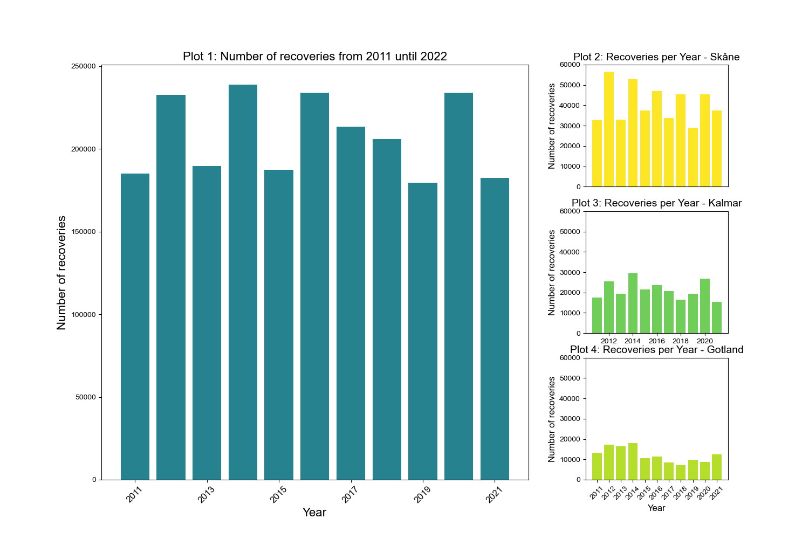

Figure 1: A picture of Colin (allegedly). Picture from Pinterest.
The Swedish bird stalkers
I'm a very very cool bird, and, therefore, many people want to catch a glimpse of my beauty. Sometimes, I refer to them as my stalkers, but they are commonly known as bird watchers. They enjoy watching my every move and report it to the Swedish Museum of Natural History. If they catch me, they look at the ring on my leg and report their observations, often referred to as recoveries. This is later incorporated in this database. This is the dataset we are going to use to tell my story.
Unfortunately, I am not the only bird they find interesting. In this story, I will be using around 1.2 million observations of the 20 most observed species of birds in Sweden. Be aware that Sweden has many species of birds, but for this story, a close up on the 20 most common ones is more than enough. We are looking at 30 variables of data from 2011 to 2021. It includes information about bird species, observation location, province, date, etc. Now let's take a look at what the data shows. Follow me!
Birds in Sweden
To understand my story, you have to know a little bit about Sweden. Sweden is an amazing country situated in northern Europe. It is divided into 21 provinces spanning over 447 424 square kilometers. The country is full of wildlife, which makes sense since 70% is made of forests (CIA, 2024), making a good home for many birds. Sweden is not only forest and the dispersion of bird homes vary according to the provinces. Here is an overview of the bird observations where some provinces are highlighted.
Figure 2. Plot 1: This plot illustrates the distribution of the 20 most frequently ringed bird species across Sweden from 2011 to 2021. Plot 2, 3, and 4: These plots showcase the distribution of the 20 most frequently ringed bird species in Skåne, Kalmar and Gotland, respectively. Note that while the range of the y-axis for Plot 1 goes from 0 to 250,000, the range of the y-axis for Plots 2, 3, and 4 go from 0 to 60,000.
In Plot 1, you may see that the number of recoveries in Sweden oscillates throughout the years, where it seems to peak every second year. However, it follows an overall normal distribution. I assume that the number of bird observations in this period is constant. Plot 2 displays a similar oscillation in the number of recoveries recorded in Skåne. This is, nevertheless, the province where the most observations have been recorded, with around 40,000 birds reports per year. It is no surprise, as the province is a perfect blend between big populous cities and a handful of forest and wildlife (Visit Skåne, 2020). This creates a perfect environment for bird enthusiasts to put their observation skills into action! I've chosen Plots 3 and 4 to show the distribution of my living areas. I live on Öland island in Kalmar and on Gotland island. I love these islands! They are beyond amazing! The magnitude in Plots 3 and 4 are smaller than the previous plots, where the observation count lies around 20,000 observations in Kalmar and 10,000 for Gotland.
Before we dive any further, I believe it is important to highlight that bird recovery data is of major importance for many researchers studying how birds like me behave and are affected by phenomena such as urbanization and climate change. However, be aware that the number of recoveries does not directly translate to the number of birds in the country.
My beloved stalkers inhabit various regions across the country. The southern parts of Sweden are very populated. These areas are characterized by their urban nature, contrasting with the sparsely populated northern provinces like Västerbotten and Norrbotten, where there is a low population density per square meter (North Sweden, n.d.). I would assume that bird enthusiasts are more apparent in the southern regions, where the population is denser. But let us check it, just to be sure! The map below illustrates the density of bird observations per 1,000 inhabitants in each province from 2011 to 2021. By using the sliders, you can explore how this density has evolved over the years.
Figure 3. The map illustrates bird observations in Sweden per 1,000 people in each province from 2011 to 2021 (use the slider to change the years). The colors within each province indicate the density of observations, ranging from dark purple for areas with no reports to yellow for locations with over 350 reports.
While the number of observations per 1,000 inhabitants has generally remained low and consistent across most provinces, exceptions exist. Provinces like Kalmar, Blekinge, and Västerbotten consistently show over 50 observations per 1,000 inhabitants, indicating a higher prevalence of bird observations in these regions. One outlier is Gotland, where the observation density per 1,000 inhabitants remained remarkably high, exceeding 250 up until 2014. Gotland is a small island with population ranging from 57,000 to 61,000 in the analyzed period and with around 10,000 observations per year, hence this contrast when compared with other more populous areas (Statiscal database, n.d.). This province is also know as a popular spot to watch birds, supporting more this analysis (Baltic Wings, n.d.) .
It is interesting how the analysis of this plot indicates that a higher population in a province doesn’t directly imply more observations per inhabitants. This could also be because bird watching, and therefore reporting, is a hobby that requires allocating some time aside, and with the hectic aspects of life, people may not be able to do it as often in cities.
But now the question is, where can we find the most observations? We, birds are always flying all over, and there are many different places where we can be spotted. The map below shows the distribution of bird observations from 2011 until 2021 per location. Note that locations of some bird observatories and lakes are also plotted in the map.
Figure 4. The map plot shows the distribution of bird recoveries across Sweden from 2011 to 2021. The size and colours of the circles represent the frequency of reports in each location. The color scale ranges from dark purple for areas with no reports to yellow for locations with over 160,000 reports. The map also includes in red and blue circles the locations of some bird observatories and lakes, respectively.
It is possible to see that observations are concentrated in certain locations scattered around the country. But why is this happening? Firstly, bird observatories are popular places to watch birds, which may indicate that people prefer these areas to practice their hobby. We can see that in these locations there are some big circles indicating dense bird recoveries.
Another important thing to highlight is how observations also appear around green areas and lakes rather than big cities. This seems to be logical, as I would imagine bird enthusiast are looking for pretty birds, like me, which let us be honest, they can't find them in the city. We enjoy nature and fresh air.
A little bit about me and my fellow freinds
Enough about Sweden! Let's talk about me and my fellow friends! Here is an overview of the count of the 20 most common birds in Sweden. Check me out! I'm the pink one.
Figure 5. Distribution of the 20 most common bird species observation in Sweden from 2011 to 2021.
Regulus Regulus is the most common bird. You probably know it as the goldcrest. It has an observation count of 294,804 for 10 years. The least common bird of the 20 of us, is the Acrocephalus schoenobaenus or Sedge warbler. It has an observation count of 41,334. I have been observed 70,702 times over 10 years, thus I'm the 13th most common bird in Sweden. I would say that's pretty impresive, no? Now let's look at how my friends and I are distributed over the years for the whole of Sweden.
Figure 6. Distribution over the bird observation count for each of the 20 most common species in Sweden from 2011 to 2021. Be aware that the plots have different y-axis ranges. The ranges are between 0 to 4,000 up to 0 to 30,000.
We see that many of my friends have very different distributions. Most are relatively uniform with some variation such as Phylloscopus trochilus (Willow warbler). Others have an increasing trend like Fringilla montifringilla (Brambling). A weird one is the Acanthis flammea (Common redpoll ), who has a count of around 10,000 for all years except in 2017, where they observe over 4 times as many of them. I, Ficedula albicollis, reach my peak in 2014 with around 10,000 observations. But wait! What is that? Do you see something weird too? Why is my family DYING?? Apparently, my population has decreased all the way down to 2,500 in 2021. This CANNOT be right! We must look into this.
The mystery of the disappearance of Colin
To be honest, I'm not a huge fan of my cousin Ficedula hypoleuca or the pied flycatcher. I mean, he's cool and all, but he's not me. I'm a bit embarrassed to say, but I'm kind of known to take over his territory, occupying his nesting areas and consuming his food resources (Guillaumet & Russell, 2022).
I wonder if there are any birds that try to invade me? That would be outrageous! To check this out, let's look at the birds that live on the same islands as me. It wouldn't make sense to check for competition in places where I don't live. I've chosen the birds where they for at least one year have a observation count over 1,000. I've restricted my research to these birds, as it would be difficult to say anything about competition for birds with fewer observations. Here are the birds and the number of observations for their best year in Öland and Gotland:
- Cyanistes caeruleus (Eurasian blue tit): ~2,200 observations in 2012
- Erithacus rubecula (European robin): ~1,205 observations in 2011
- Ficedula albicollis (Colared flycatcher AKA me): ~8,121 observations in 2014
- Parus major (Great tit): ~4,818 observations in 2014
- Phylloscopus trochilus (Willow warbler): ~2,027 observations in 2012
- Regulus regulus (Goldcrest): ~2,300 observations in 2021
Figure 7. The graph shows the correlation between the most observed birds in Öland and Gotland.
Generally, there is a low number of negative correlations between all the chosen birds. The lowest correlation is -0.46 and is between Erithacus rubecula and Phylloscopus trochilus. Not even me! My most negative correlation is -0.3 with Regulus regulus. There does not seem to be any other birds that are invading my territory. So, maybe it's not my social dynamic with my neighboors. But to take a deeper look, i have found the distribution of our occurence just for Öland and Gotland and only for the birds listed above.
Figure 8. Distribution of the bird observation for the most common species in Öland and Gotland between the years 2011 to 2021. This plot is interactive.
Okay so that is weird no? I am clearly the king of Öland and Gotland. And the only bird that might even have a chance to compete is Parus major. And even for Parus major the population has decreased drastically. Maybe it's a geographical challenge that I am facing. Okay! So next up, a map over my precious islands.
Figure 9. Distribution of the bird observation for the most common species in Öland and Gotland between the years 2011 to 2021. Please be aware that in the marker for each circle count, the actual count is givin by "count". This plot is interactive.
We can see that the observations are concentrated to the south of the islands and that almost no observations occurred in the north of the island after the year 2014. Let's check if the same is true for the rest of my neighbours.Figure 10. Distribution of the bird observation for the most common species in Öland and Gotland between the years 2011 to 2021. Please be aware that in the marker for each circle count, the actual count is givin by "count". This plot is interactive.
So weirdly enough it's the whole island.Weirdly enough, this is happening for all of the species on the island of Gotland. I have tried to come up with some theories for this weird change in observation location. Here is what I think:
- Military occupation: Gotland is an island that has a high strategic importance military-wise. It is situated in the Baltic Sea and is a link between Sweden and the Baltic region. As of 2015 Sweden has decided to reestablish their military presence on the islands (Wikipedia, n.d.). This might have restricted my stalker's access to the island. But, the only source I could find to back up this theory is that they rebuilt their headquarters (C.F. Møller Architects, n.d.) in 2016. It's only 24,500 square meters big which corresponds to 5 football fields. That is not a lot on such a big island. Although there could be some military dynamics that are unaccounted for, it is difficult to say it that is the reason for the weird change in observation location on Gotland.
- Deforestation: I live in trees and eat insects. So my habitat is very dependent on trees. It could be that humans have used the trees in my home more lately. There is proof of deforestation here (Global Forest Watch, n.d.), but it seems to be uniform across the whole country. That means that my observation count should also be uniform across the island, which it is not. So deforestation is an unlikely cause.
- Changes in agriculture: if the agricultural area has increased or if the agriculture types have changed it could have an impact on my habitat. However, it has been difficult to find data on the changes in the agricultural landscape in the recent years of the islands.
Figure 11. Distribution of the bird observation for the most common species in Gotland, Kalmar, Skåne, Halland, and Stockholm between the years 2011 to 2021. Please be aware that in the marker for each circle count, the actual count is givin by "count". This plot is interactive.
Looking around in the plot it is clear that the observation locations change slightly, but not as much as in Gotland and they are all concentrated around the same area.Conclusion
Thank you for being my companion in my research of my decreasing population. So what have we learned? My decreasing population is probably not due to territorial competition. It is probably highly linked to the change in observation locations in Gotland. In Gotland, the concentration of observation has concentrated around the southern area of the island throughout the years. The change coincides with the time when Sweden's military has become more dominant in Gotland. But it is difficult to identify it as a cause. Even if it were the military that scared my stalkers off of the north of Gotland, I probably still live there. So if that is the case, maybe it's not so bad.
As we know, I only live on the islands of Öland and Gotland. My neighbors also live on the mainland. This means that a small shift in observations from Gotland to the mainland means that my stalkers are much less likely to observe me and way more likely to observe the other birds. So my disappearance is likely not because I actually disappeared. I believe that my observations are very dependent on human changes and that their observation patterns make their knowledge about my presence biased. So note to all humans! Come and visit me sometime next summer in Gotland! I have heard rumors that there are many hiking trails where you can find a lot of birds!
Reference
[1] CIA. (2024, April 24). Sweden. In The World Factbook. Retrieved from https://www.cia.gov/the-world-factbook/countries/sweden/
[2] C.F. Møller Architects. (n.d.). Gotlands Garnison. Retrieved from https://www.cfmoller.com/p/Gotlands-Garnison-i3344.html
[3] Global Forest Watch. (n.d.). Global Deforestation Rates & Statistics by Country | GFW. Retrieved from https://www.globalforestwatch.org/dashboards/country/SWE/4/?category=forest-change&location=WyJjb3VudHJ5IiwiU1dFIiwiNCJd
[4] Guillaumet, A.; Russell, I.J. Bird Communities in a Changing World: The Role of Interspecific Competition. Diversity 2022, 14, 857. https://doi.org/10.3390/d14100857
[5] Statistikmyndigheten SCB. (n.d.). Population by region, marital status, age and sex. Year 1968 - 2023. Retrieved from https://www.statistikdatabasen.scb.se/pxweb/en/ssd/START__BE__BE0101__BE0101A/BefolkningNy/?rxid=12cefc3c-6333-4c71-808d-c6669b0f7127
[6] Visit Sweden. (n.d.). Southern Sweden – culture-rich cities and coastal views. Retrieved from https://visitsweden.com/where-to-go/southern-sweden/skane/
[7] Wikipedia contributors. (2024, May 7). Collared flycatcher. In Wikipedia. Retrieved 18:31, May 7, 2024, from https://en.wikipedia.org/wiki/Collared_flycatcher
[8] Wikipedia contributors. (n.d.). Military on Gotland. In Wikipedia. Retrieved from https://en.wikipedia.org/wiki/Military_on_Gotland